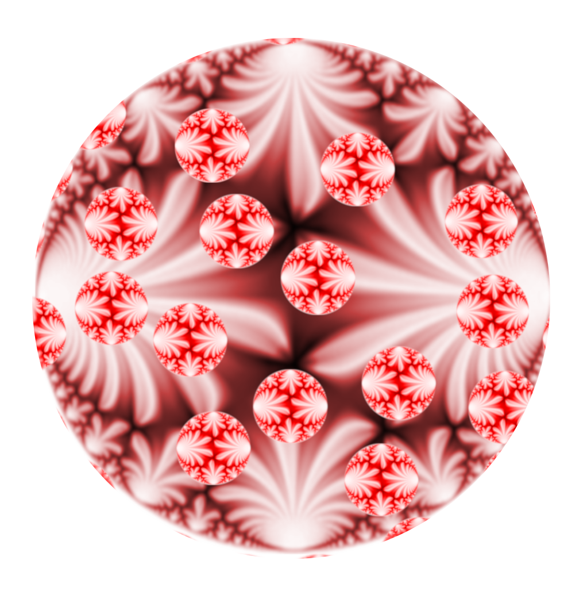

The seminar takes place on Tuesdays, usually from 16:00 to 17:00 CET (GMT+1, time zone of Amsterdam, Berlin, Rome, Stockholm, Vienna) via Zoom. The meetings start 15 minutes before the talk with a short coffee break.
You can join the Zoom meeting at https://tu-darmstadt.zoom.us/j/68048280736
The password is the first Fourier coefficient of the modular $j$-function (as digits).
The videos of some of the past talks are available on our youtube channel. If you wish to receive emails with news about the seminar and reminders for talks, please just write to one of the organizers.
Organizers:
Claire Burrin (University of Zurich)
Luis García (University College London)
Yingkun Li (UW Madison)
Riccardo Zuffetti (TU Darmstadt)

27.10.2026 -- 16:00-17:00 (CET, UTC+1)
Campbell Wheeler (IHES)
10.11.2026 -- 16:00-17:00 (CET, UTC+1)
Ryan Tamura (UW Madison)
17.11.2026 -- 16:00-17:00 (CET, UTC+1)
Kenz Kallal (Princeton)
24.11.2026 -- 16:00-17:00 (CET, UTC+1)
Maximiliano Sanchez Garza (University of Virginia)
08.12.2026 -- 16:00-17:00 (CET, UTC+1)
Tian Wang (University of Bonn)
15.12.2026 --
10:00-11:00
(CET, UTC+1)
Nobuki Takeda (Kyoto University)
12.01.2027 -- 16:00-17:00 (CET, UTC+1)
Rebekka Strathausen (TU Darmstadt)
19.01.2027 --
15:00-16:00 (CET, UTC+1)
Hongbo Yin (Shandong University)
26.01.2027 -- 16:00-17:00 (CET, UTC+1)
Cody Strouse (UC Davis)
02.02.2027 -- 16:00-17:00 (CET, UTC+1)
Özlem Imamoglu (ETH)